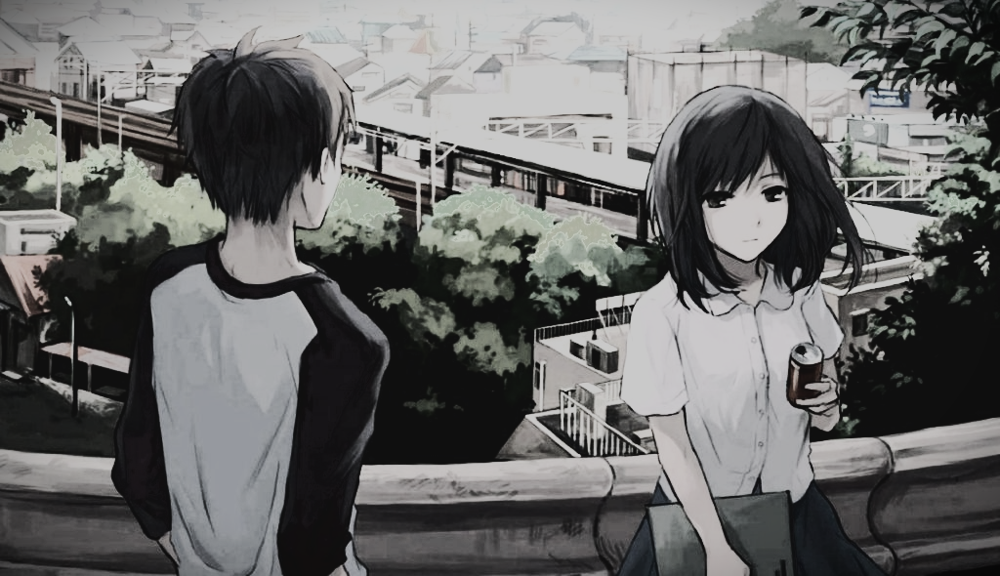
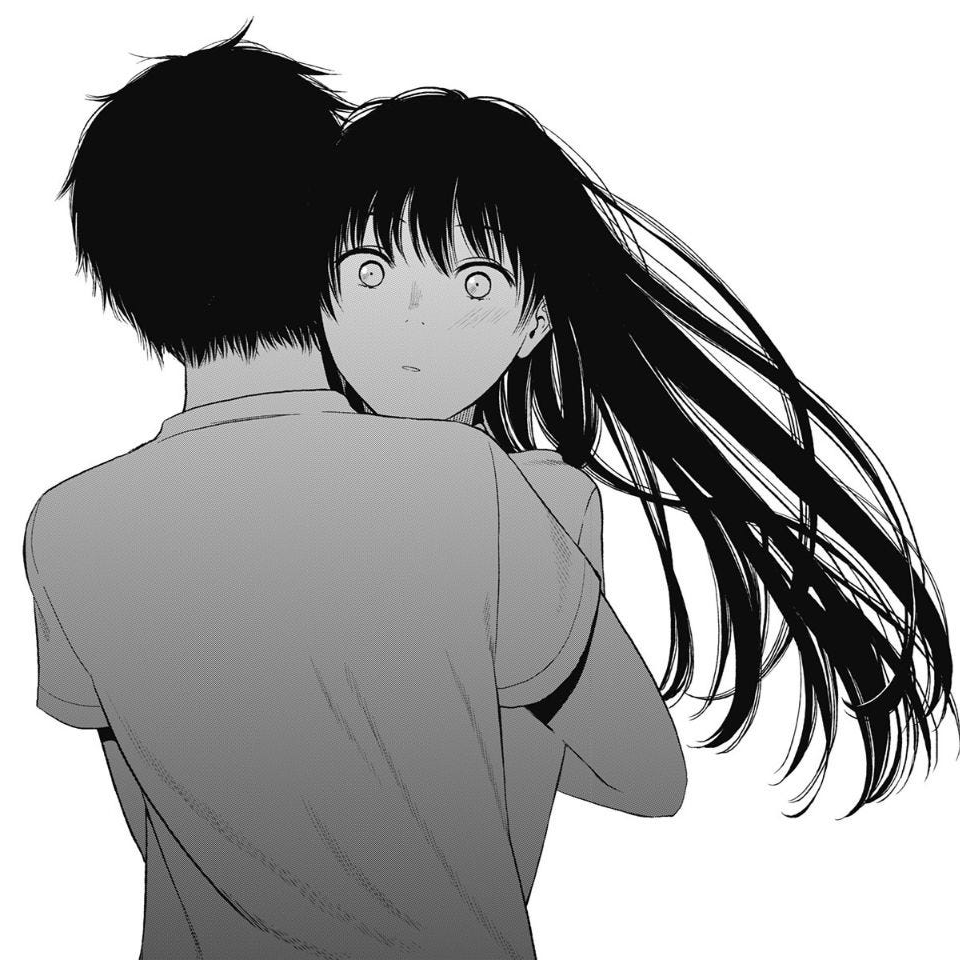

Mark L. Dela Cruz
Three Days of Happiness Manga Review
“Would you sell your lifespan if you knew you wouldn’t do anything important with it?”
That is what the protagonist of Sugaru Miaki’s Three Days of Happiness or I sold my life for ten thousand yen per year, accomplishes. A 20-year-old broke college student named Kusunoki finds out about a store that trades in time, health, and lifespans. Kusunoki chooses to investigate this enigmatic shop after selling the last of his joy-inducing belongings in order to pay for food and lodging. Kusunoki always thought he was destined to be somebody significant. In light of this, he estimates that if he sells 30 of the 60 years, he believes he has left to live, he should receive a sizeable quantity of money..
Kusunoki learns to his dismay that he has only 30 more years to live, and in those years, he has a wretched existence, making each year worth 10,000 yen, or roughly 4000 pesos, in today’s money. Kusunoki makes the decision to sell the remaining years minus three months after learning how little his life is worth. He is given a monitor he can only see to keep an eye on him because he has less than a year left and must be careful not to harm anyone. Up until his last three days of life, when he gets to live alone in privacy, his monitor will stay with him.
“Though there's no use loving someone who's soon to go away”
Not going to lie, this story is probably one of the saddest manga I’ve ever read. When I say sad, I don’t mean like when you see those abused puppy commercials, more like Kusunoki’s life is just really sad. When he was then he made a pact with his childhood friend named Himeno that when they grow up if they are still an outcast like they are as children, they will get together. Himeno eventually moves later that year, but Kusunoki holds onto that pact, which prevents him from making any love connections. To make matters worse, when he eventually meets up with Himeno during his last three months, he finds out that she hates him and blames him for her life troubles, and plans to kill herself right before him as revenge. Kusunoki’s story continues like that for most of the book. He meets up with people he thought cared about him only to find out they don’t like him. He goes on this sad journey of self-discovery and finds out his life didn’t matter.
Kusunoki isn’t alone during his journey; he has his monitor, Miyagi, whom he learns is paying off a debt left by her mother after she sold her time and died before she paid it off. Kusunoki and Miyagi grow closer and bond over the shared worthlessness of their lives. Without giving too much away, the two do eventually help each other make their lives worth a little more than before they meet. The growing relationship between these two very sad souls shows how the connection between people can benefit not just you, but other people around you.
Even though this book sounds incredibly depressing, it was a pretty good read. The writing was well done, the concept was intriguing and I was instantly invested in Kusunoki’s story. After every sad thing that I learned about Kusunoki, I kept hoping that at least one good thing would happen to him so that his life wouldn’t be such a disappointment. He just held onto this idea that he was going to do something amazing in the future that he forgot to do something amazing in the now instead. If he hadn’t gone to go and sell his lifespan, he would never have known how miserable the rest of his life would have been. The real moral of this story is that you can’t expect something to happen if you don’t do anything to make something happen.
This manga made me think about my own life and if I’ve made enough of an impact on others to be considered valuable. It was a thought-provoking book that will make you consider what exactly life is worth and worth living if you don’t make something good out of it. I would recommend this relatively short read that will hopefully inspire you to ask yourself the following questions: What would you do with your life if you knew it was going to end relatively soon? Would you try to make the world better? Would you try to make up for past mistakes? Or would you just accept your fate?